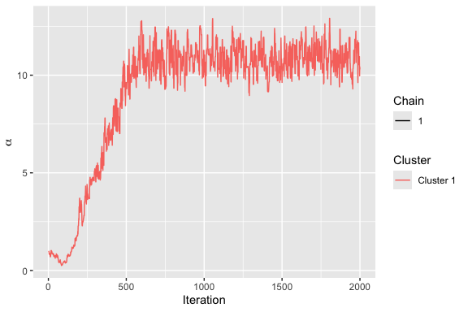

This package provides a general framework for analyzing rank and preference data based on the Bayesian Mallows model first described in Vitelli et al. (2018).
Installation
To install the current release, use
install.packages("BayesMallows")To install the current development version, use
# install.packages("remotes")
remotes::install_github("ocbe-uio/BayesMallows")Basic Usage Example
To get started, load the package with
The package comes with several example datasets. The simplest one contains 12 persons’ assessments of the weights of 20 potatoes, either by visual inspection (potato_visual) or by lifting the potatoes and comparing their relative weights by hand (potato_weighing). To fit a Bayesian Mallows model on the potato_visual dataset, we do
fit <- compute_mallows(potato_visual)Next, we can see a diagnostic plot for the Metropolis-Hastings algorithm with assess_convergence(). The plot below is for the scale parameter, which measures the variation between the individual rankings.
assess_convergence(fit)
Setting the burnin to 500, we obtain a plot of the posterior distribution of the scale parameter with:
plot(fit, burnin = 500)
For more examples, please our R Journal paper, and the function documentation. The use of parallel chains are described in this vignette.
The Bayesian Mallows Model
Methodology
The BayesMallows package currently implements the complete model described in Vitelli et al. (2018), which includes a large number of distance metrics, handling of missing ranks and pairwise comparisons, and clustering of users with similar preferences. The extension to non-transitive pairwise comparisons by Crispino et al. (2019) is also implemented. In addition, the partition function of the Mallows model can be estimated using the importance sampling algorithm of Vitelli et al. (2018) and the asymptotic approximation of Mukherjee (2016). For a review of ranking models in general, see Liu, Crispino, et al. (2019). Crispino and Antoniano-Villalobos (2022) outlines how informative priors can be used within the model.
Updating of the posterior distribution based on new data, using sequential Monte Carlo methods, is implemented and described in a separate vignette. The computational algorithms are described in further detail in Stein (2023).
Applications
Among the current applications, Liu, Reiner, et al. (2019) applied the Bayesian Mallows model for providing personalized recommendations based on clicking data, and Barrett and Crispino (2018) used the model of Crispino et al. (2019) to analyze listeners’ understanding of music. Eliseussen, Fleischer, and Vitelli (2022) presented an extended model for variable selection in genome-wide transcriptomic analyses.
Future Extensions
Plans for future extensions of the package include implementation of a variational Bayes algorithm for approximation the posterior distribution. The sequential Monte Carlo algorithms will also be extended to cover a larger part of the model framework, and we will add more options for specifications of prior distributions.
Citation
If using the BayesMallows package in academic work, please cite Sørensen et al. (2020), in addition to the relevant methodological papers.
citation("BayesMallows")
#> To cite package 'BayesMallows' in publications use:
#>
#> Sørensen Ø, Crispino M, Liu Q, Vitelli V (2020). "BayesMallows: An R
#> Package for the Bayesian Mallows Model." _The R Journal_, *12*(1),
#> 324-342. doi:10.32614/RJ-2020-026
#> <https://doi.org/10.32614/RJ-2020-026>.
#>
#> A BibTeX entry for LaTeX users is
#>
#> @Article{,
#> author = {{\O}ystein S{\o}rensen and Marta Crispino and Qinghua Liu and Valeria Vitelli},
#> doi = {10.32614/RJ-2020-026},
#> title = {BayesMallows: An R Package for the Bayesian Mallows Model},
#> journal = {The R Journal},
#> number = {1},
#> pages = {324--342},
#> volume = {12},
#> year = {2020},
#> }Contribution
This is an open source project, and all contributions are welcome. Feel free to open an Issue, a Pull Request, or to e-mail us.